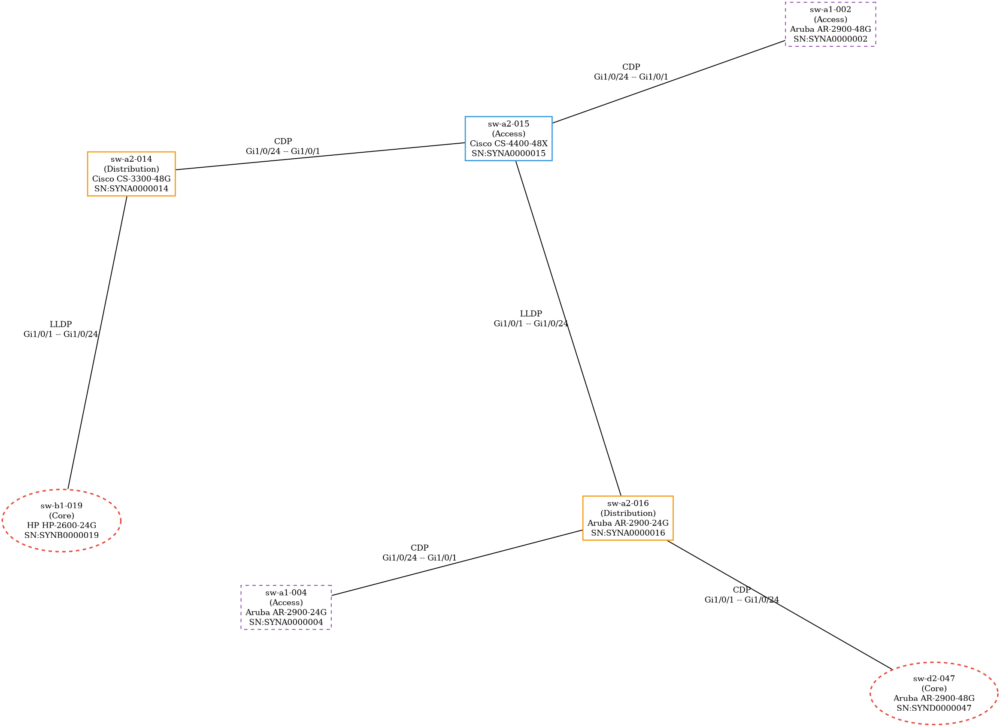

Network Survey Automation
A toolkit that turns a slow, spreadsheet-driven physical network survey into a repeatable, validated and visualised pipeline. In its production rollout it helped compress a four-month manual survey programme into under two months.
1. Overview
Physical network surveys are slow and error-prone: an engineer visits every rack and lab, connects a console cable, captures CLI output, then copies values into a spreadsheet. The result is inconsistent between people, hard to audit, and painful to re-run.
This project replaces that with four cooperating parts: a guided field-capture GUI, a staged LLM extraction pipeline, a normalised SQLite warehouse, and a topology inference and reporting layer. The public build runs entirely on synthetic data.
2. The problem
- Inconsistent capture. Every surveyor records location and device data differently.
- No reliable join key. Logs and metadata are matched by hand, so files get lost or misfiled.
- Vendor sprawl. Cisco, HP, D-Link, Huawei and Aruba all format CLI output differently.
- Hidden topology. Some switches sit behind unmanaged hops; many external devices have no hostname.
- Changing requirements. The client did not know up front exactly what the survey needed to produce.
3. Architecture
The interactive diagram below is a self-contained viewer (zoom, pan, guided views). It shows how field capture, staged extraction, the warehouse and the analysis layer connect.
4. Workflow
The seven-phase pipeline from reference data through capture, extraction, human review, ingestion and output. The review gate is deliberate: model uncertainty becomes a targeted human queue.
4b. Staged extraction
How one device is processed: field capture, then three schema-validated prompt stages against the Gemini API, a severity-ranked review queue, and finally a load into the warehouse.
5. Results
The committed demo dataset is generated by tools/generate_synthetic_data.py and flows through
the real loaders and diagram engine. The production figures are anonymised.
| Metric | Demo build (committed) | Production rollout (anonymised) |
|---|---|---|
| Sites | 4 | 4 |
| Lab areas | 24 | ~50 |
| MOONIDs | 56 | ~250 |
| Managed switches | 47 | ~700 |
| Unmanaged / other devices | 44 | ~600 |
| MAC-table entries | 2,526 | 100,000+ |
| Interfaces | 1,584 | ~27,000 |
| LLDP/CDP adjacencies | 98 | ~2,000 |
| Diagrams | 43 | ~90 |
Sample generated topology
One of the synthetic Pydot diagrams, clustered by inferred role.

6. Data model
A single-file SQLite warehouse with 16 tables, foreign keys, cascades and indexes. Reference data feeds device inventory, which feeds operational detail.
Reference
- lab_areas
- moonid_areas
Inventory
- switches
- logged_other_devices
- logged_access_points
- switch_moonid_map
Operational detail
- interfaces, vlans, ip_interfaces
- mac_address_table, arp_table
- lldp_cdp_neighbors
- ip_routing_table
- discovered_unassigned_networks
7. LLM engineering
Logs are parsed in three stages, each constrained by a Pydantic schema so a malformed response fails loudly instead of poisoning the warehouse.
| Stage | Extracts | Why separate |
|---|---|---|
| 1A | Device details, interfaces, VLANs, IP interfaces, ARP, routes, neighbours | Smaller, testable contract |
| 1B | MOONID associations, unassigned networks | Needs the MOONID reference data |
| 2 | MAC address table, chunked into batches | Hundreds of rows would blow the context |
- 14 Pydantic models validate each stage before acceptance.
- Items for review are severity-ranked, producing a human work queue instead of blind trust.
- Process-pool batching with a deliberately low worker count and one retry per device.
8. Topology inference
- Role inference. Core / Distribution / Access / Router from inter-switch degree, betweenness centrality and distance to the Floor Access Switch.
- MAC-based uplinks. Reconstruct links hidden behind unmanaged hops by comparing per-port MAC sets with Jaccard similarity, plus a relaxed pass for isolated islands.
- Access-point linking. Exact MAC match first, then a systematic last-octet variation.
- MOONID propagation. Top-down from the FAS so hosts inherit a network identity.
- Neighbour de-duplication. A multi-identifier cache merges the same external device.
9. Decision log
Sixteen evidence-based decisions (GUI capture, deterministic folders, two waves, SQLite, LLM over TextFSM, staged prompts, Pydantic validation, human review, batching, heuristic topology, FAS anchoring, and the public-release sanitisation) are recorded as ADRs.
10. Traceability
Every artefact from the original working repository is accounted for: ported, renamed, archived under
legacy/, regenerated as synthetic data, or explicitly dropped with a reason.
11. Run it
Rebuild the entire demo (synthetic data, database, diagrams and report):
python -m venv .venv source .venv/bin/activate pip install -r requirements.txt ./run_demo.sh
Or step by step:
python tools/generate_synthetic_data.py --profile small python -m netsurvey.db.create_db python -m netsurvey.db.load_other_devices_json_to_db python -m netsurvey.db.load_validated_json_to_db python tools/generate_demo_diagrams.py python -m netsurvey.reporting.extract_unassigned_networks
12. Privacy
No employer, personal or production data is present. Hostnames use the reserved domain
example.com; MAC addresses use the locally-administered prefix 02:00:00; IP
addresses come only from reserved blocks (RFC 5737 documentation ranges and the RFC 2544 benchmarking
range); serials are prefixed SYN; and logs contain no running configuration or credentials.
Internal terminology has been generalised to MOONID, business_group and
campus_id.